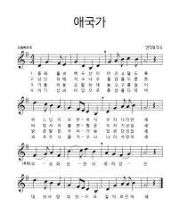

- 애국가
- 육군가
- 진짜사나이
1절
사나이로 태어나서 할 일도 많다만
너와 나 나라지키는 영광에 살았다
전투와 전투 속에 맺어진 전우야
산봉우리에 해 뜨고[4] 해가 질 적에
부모형제 나를 믿고[5] 단잠을 이룬다
2절
입으로만 큰소리쳐 사나이라더냐
너와 나 겨레지키는 결심에 살았다
훈련과 훈련 속에 맺어진 전우야
국군 용사의 자랑을 가슴에 안고
내 고향에 돌아갈 땐 농군의 용사다
3절
겉으로만 잘난 체 해 사나이라더냐
너와 나 진짜 사나이 명예에 살았다
멋있는 군복 입고 휴가간 전우야
새로운 나라 세우는 형제들에게
새로워진 우리 생활 알리고 오리라
마지막
진~짜~사~나~이~
